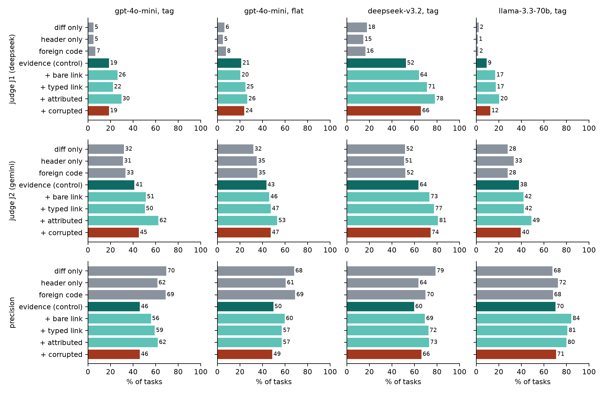
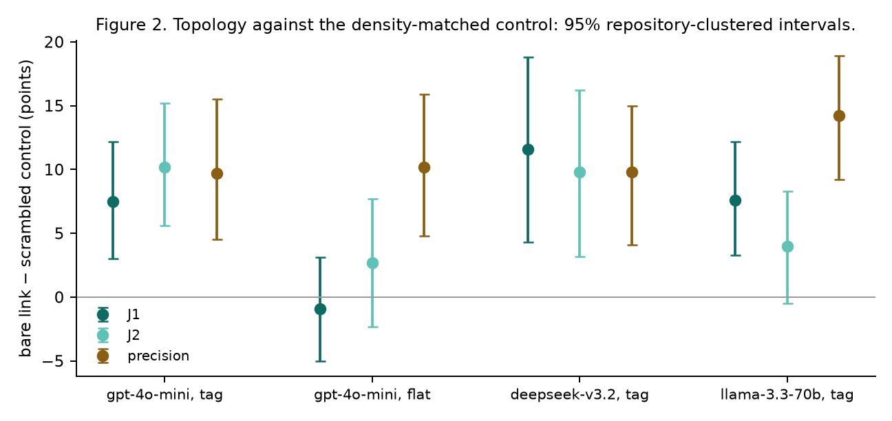
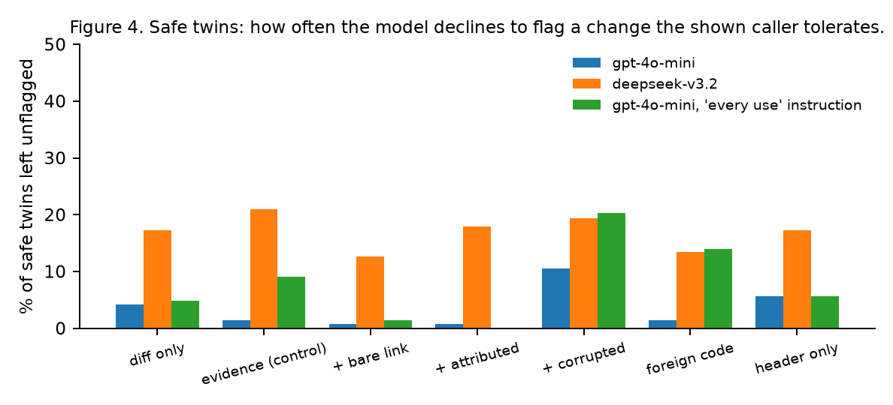
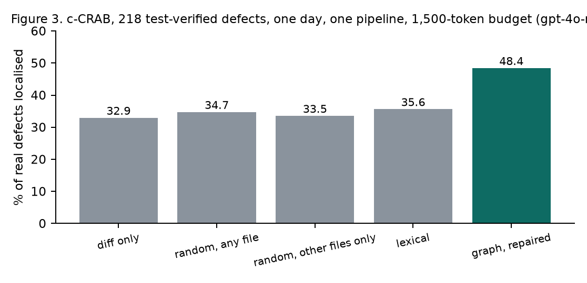

Independent researcher, Addis Ababa · tadaelshewaregagebre30@gmail.com
Systems that give a language model more of the repository during code review change two things at once: which code the model sees and how its relationships are described. Reported gains cannot be attributed to either, and we show a prior problem: on common benchmarks the diff alone already answers the question. We propose three diagnostics for whether a review benchmark can measure context at all. A diff-only ceiling test: a model given nothing but the change finds the defect line in 97.8% of tasks on a mutation benchmark with verified cross-file evidence, as it does near 0.98 on paired vulnerability datasets. An anchor-versus-evidence measurement on 291 test-verified real defects: every comment anchors inside the changed files, and 33 to 50% refer to code the diff does not contain. And discrimination with matched safe twins: the same mutation placed where the shown caller is verifiably robust, so that only the other file separates defect from safe; no arm on either of two models clears more than a fifth of the safe twins.
We then hold the evidence fixed and vary only the dependency metadata between snippets, across three model families, two serialisations, a density-matched scrambled control, a foreign-repository relevance control, a header-only control and a comprehension probe. The real caller raises the rate at which the model explains the defect through the caller by 8 to 36 points over foreign code at equal budget under two judges from different model families, while the dependency header alone adds nothing. Showing the caller also lowers precision by about twenty points on two models. A bare true link between snippets raises caller-grounded explanation by 7 to 12 points on two model families under one encoding, with two independent judges agreeing, and not under the other encoding; it raises precision, which needs no judge, by 10 to 14 points on all four runs; a pre-registered keyword rubric, found invalid before the full data, spans zero and is reported as such. The link does nothing when the fact it points to is hidden, and its gain shrinks under added noise. On 219 real, test-verified defects, graph retrieval repaired to reach the caller localises 48% against 33% for the diff alone and 33–36% for random, random-other-file or lexical retrieval at the same budget.
We release the generator, the twin benchmark, the frozen runs, the judge with its hand-labelled validation, the analysis, and the record of six claims withdrawn during this work.
A pull request changes one function. Three files away, another function relies on the behaviour that just changed. Nothing in the diff is wrong on its own terms, and a reviewer who reads only the diff cannot see the problem. Systems that give a language model more of the repository exist to close this gap, and the most elaborate of them build a dependency graph, retrieve the neighbourhood of the change, and present it to the model with its structure attached.
Two things change at once in that design. The model receives different code than it would from a plain lexical search, and it receives a statement of how the pieces relate. Published comparisons report the combined effect [1, 2]. They do not say which part is doing the work, because in an end-to-end comparison the retrieved set and its representation move together. The question this paper asks is the one that remains once retrieval is taken out: given the same code, does telling the model how it is connected help it find the defect?
We answer it by holding the evidence fixed. Every arm of the experiment sees the same diff and the same three snippets, the definition, the caller that depends on it, and a decoy, rendered identically. Only a short metadata block differs: absent, scrambled so that it has the same shape and says nothing true, a bare link, a typed relation, a typed relation with its argument, or a relation with a plausible wrong endpoint. Two further arms replace the snippets with code from an unrelated repository or remove them while keeping the metadata section, so that the effect of the snippets and the effect of a dependency section being present can be told apart. The relations are rendered two ways, as a flat arrow line and as an XML-style tag, because graph reasoning in language models is known to depend on encoding [3]. A comprehension probe checks, independently of the review task, that the model can read each block back. The primary comparison, bare link against scrambled control, was fixed before any result existed.
The experiment needs defects whose evidence is known exactly. We generate them: a mutation in one file that is wrong only because of an assumption a different file demonstrably makes, where "demonstrably" is checked on that file's syntax tree, not by pattern matching. The diff carries harmless edits beside the defect, each verified to leave the file parseable, so the reviewer must say which change is wrong. The first version of this generator did neither check correctly, and Section 6 records what that cost.
Two secondary measurements frame the main one. On 291 test-verified defects from a mined review benchmark [4], every comment anchors on a file the pull request changed, and a third to a half of them refer to code the diff does not contain, so where a comment sits is not where its justification lives. And a bare model with search tools, asked to review a diff, searched in none of forty tasks; told that the defect depended on another file, it searched in all forty. The capacity is there and the trigger is not.
The contributions are the design, the benchmark and its generator with the verification that makes its ground truth exact, the measurements, and a record of the claims this project made and withdrew along the way. We state what each result does and does not support. On real defects, retrieval that reaches the caller through the dependency graph localises fifteen points more than random code from other files at the same budget; that is a result about reaching the caller, and the structure experiment is about what happens once it is reached.
AACR-Bench [2] evaluates automated review on 1,505 issues and reports that context granularity, with arms for diff, file and repository, and the choice of retrieval method both change performance, with effects that vary by model and language. It labels 233 of its 1,505 issues as repository-level, about 15%, so most of its ground truth is resolvable from the changed file alone. c-CRAB [4] converts human review comments into tests that fail before the fix and pass after it, yielding 291 confirmed functional defects; it evaluates finished reviewers rather than context strategies, and we reuse its defects for a secondary measurement of anchor scope against evidence scope. SWR-Bench [5], CodeFuse-CR-Bench [6] and MCR-Bench [7] broaden the task to whole pull requests and multi-round review; MCR-Bench includes a long-range dependency miss error category, which names the failure we study without isolating its cause. SWE-PRBench [8] evaluates 350 pull requests and finds that all eight frontier models degrade monotonically as same-file context is appended to the diff, which its authors call attention dilution; its Type3_Latent class, 26% of defects, resides in files that import the changed files. Together these benchmarks establish that cross-file defects exist, that more raw context does not reliably help, and that retrieval choice matters, but in each the content of the context and its representation move together. This paper adds a design in which the evidence snippets are fixed across arms and only the dependency metadata between them varies, from bare topology through typed and attributed relations, measured on generated cross-file defects whose evidence is verified on the caller's AST and secondarily on the 291 c-CRAB defects.
RepoGraph [9] builds a repository-level graph of definitions and references and retrieves ego-graphs around matched entities for agents; our graph construction follows it. GRACE [1] couples graph-guided retrieval with structural fusion of the retrieved subgraph into the prompt and reports a gain of 8.19 exact match on repository-level completion; because the retrieved set and its structural encoding change in the same step, the gain cannot be attributed to either alone. DyRetriever [10] and LARGER [11] report further gains from graph-guided methods on generation and localisation, which shows that graphs help when the bottleneck is finding the right code. GrepRAG [12] reports that ripgrep over the repository matches or beats graph retrieval on CrossCodeEval, and Agent Retrieval Bench [13] finds that no retriever dominates, although any retrieved seed beats a random non-gold seed. These results bound the retrieval question on both sides: a graph can select better evidence, and a cheap lexical search can often select it just as well. None of them separates the selection of evidence from the statement of how the selected pieces relate. This paper holds selection fixed by construction and intervenes on the relation statement only, for review rather than completion.
Outside code, the evidence that prompted models read graph structure is mixed. On text-attributed graphs, "When Structure Doesn't Help" [14] finds node text alone strong and structural encodings marginal or negative. "Actions Speak Louder than Prompts" [15] uses shuffled-adjacency controls and finds that prompting-mode models lean on node features while a code-execution mode does use the structure; our scrambled control follows the same logic. "Lost in Serialization" [3] shows that graph reasoning is not invariant to node labelling or encoding, and [16] traces part of this to RoPE-induced attention decay between nodes that are adjacent in the graph but distant in the linearisation. GraphSOS [17] and GraphDO [18] show that serialisation order alone moves accuracy, with GraphDO reporting 89.43% under BFS order against 78.36% under random order. For code, "Representation Matters" [19] reports that prompts built from AST and PDG views beat raw source on vulnerability reasoning, 83.2 against 53.5; there the structural view replaces the source, so the comparison measures a change of content as much as a change of representation. Our arms add metadata to constant content, so the two designs answer different questions, and we read that result as a ceiling on what structure can carry rather than as a measurement of its marginal value. This paper adds three serialisations, a comprehension probe that asks the model to read the relation back, and a per-kind rubric that scores whether a finding names the mechanism the caller depends on, so that use of structure is measured separately from detection.
"Context Length Alone Hurts" [20] shows that padding a prompt with irrelevant text degrades performance independently of the task. RepoReasoner [21] finds that longer context is not consistently better and that models struggle on cross-file reasoning even with oracle context, so perfect evidence does not guarantee the right inference. "When Retrieval Hurts Code Completion" [22] identifies cases in which retrieved context lowers accuracy. Two review-specific results pull in different directions. "Measuring and Exploiting Contextual Bias in LLM Security Code Review" [23] finds that non-code metadata can override the semantic content of the code, which is the mechanism by which corrupted dependency metadata could cause harm. "LLM Code Reviewers Are Harder to Fool" [24] finds that text distractors did not reduce detection. Neither study varies structural metadata about the code under review while holding the code fixed. This paper adds controls for the matched-length confound: a scrambled arm with the same density and nothing true, a corrupted arm with a plausible wrong endpoint, a random-code arm drawn from an unrelated repository with distractors parse-checked, and a header-only arm, so that length, plausibility and truth can be separated.
Whether an agent looks for a dependency on its own depends on the harness. CodeCompass [25] reports that claude-sonnet-4-5 made zero tool calls in 58% of trials despite an instruction to search, and that a trailing checklist raised this to 100%. "Agentic Code Review in the Terminal" [26] finds that harnessed products such as Claude Code and Gemini CLI take 5.5 to 7.5 exploration steps unprompted, and OpenCodeReview [27] offers an open implementation of such a reviewer. Any claim that agents do not search therefore has to be scoped to a bare tool-equipped model. For ground truth, CR-Bench [28] mines 584 bug-inducing pull requests from SWE-bench fixes with an SZZ-style procedure, and Song et al. [29] characterise 280 Java regressions, including compatibility errors in which a correct change violates an assumption held elsewhere in the repository; AgentSZZ [30] automates the mining step with an agent. These are the prior art for mined cross-file regressions and the natural external check on a generated benchmark. This paper adds a search-trigger test on a bare tool-equipped model, scoped as above, and relates its generated cross-file defects to the mined compatibility class rather than replacing it.
Three results from 2026 bear directly on the twin finding and the judge. "Measuring and Exploiting Contextual Bias in LLM-Assisted Security Code Review" [23] shows, on 250 CVE and patch pairs across six models, that a natural-language assertion that code is safe collapses detection, from 97% to 4% for gpt-4o-mini, while an assertion that it is buggy barely moves it. Our twins vary structural metadata, not text, and find the opposite asymmetry: no form of dependency structure, true or false, lowers the model's willingness to flag; the two channels are different and the contrast is the one our design can speak to. "Are LLMs Reliable Code Reviewers?" [31] finds that asking a model to explain raises its misjudgement of correct code, which is why Section 4.8 checks, and rejects, the reading that our explanation gains are overcorrection. Matched-pair designs in modernisation [32] and vulnerability detection [33] score a pair correct only when both members are, and report pairwise accuracies near 0.1; our twins are the caller-context version of that design, verified on the syntax tree, and we report the twin half separately because the pairs are matched by mutation kind rather than by function. "Bias in the Loop" [34] shows that model judges flip on presentation cues with code unchanged; our judge sees only the changed line, the generator's reason and the message, never the arm or the snippets, and two judges from different families are reported. This paper adds the structural channel to the framing result, and a twin benchmark whose safe member is safe by construction rather than by annotation.
The question is whether telling a model how retrieved code is connected helps it find a defect, once the code itself is already in front of it. Prior comparisons cannot answer this because retrieval and representation change together: a graph-based system retrieves different snippets and presents them differently, so a gain cannot be attributed to either. We hold the snippets constant and intervene only on the metadata that describes their relationships.
A reviewer receives a pull-request diff and must report defects as a list of (file, line, message). Each task contains exactly one defect, introduced by a mutation in one file, that is wrong only because of an assumption a different file makes. The diff also contains two or three harmless edits, so the reviewer must say which change is wrong rather than that something is.
Tasks are generated from production repositories at a fixed commit. For every public function with a caller in another file, the generator attempts one of five mutations and keeps the task only when the caller's syntax tree demonstrates the dependency the mutation breaks:
| Kind | Mutation | What the caller must contain |
|---|---|---|
exception_type | raise A → raise B | a handler that catches A and not B, enclosing the call |
none_sentinel | return None → return -1 | a comparison of the call's result with None |
default_flip | p=True → p=False in the signature | a call that omits p, positionally and by keyword |
tuple_order | return a, b → return b, a | an unpacking assignment of the call's result |
empty_to_none | return [] → return None | iteration over, or len of, the call's result |
Calls are resolved through imports: a bare name imported from the defining module, or module.name after a module import. Attribute calls on arbitrary objects are not matched, which excludes most methods and removes name collisions between unrelated functions called run or write. Each task records the verified caller line and the argument of the dependency: the exception type, the parameter name, the unpacked names.
Distractors are rewrites that cannot change behaviour, such as dict() → {} or == None → is None. Each is applied to a copy of the whole file and rejected unless the file still parses. The diff lists the defect and the distractors in line order with nothing marking which is which.
An earlier version of this benchmark is withdrawn. Its distractor rewriter broke docstrings in 145 of 204 tasks, so a model that flagged a syntax error was scored as a false positive, and its evidence was located by a regular expression within eight lines of any same-named call, which was a genuine demonstration of dependency in roughly a third of tasks. Section 6 reports the figures. The present generator was written against those findings, and a test suite pins each of them.
For every task the evidence set E is fixed and identical across the arms that receive it: a 25-line window around the mutated line in the definition file, a 25-line window around the verified caller line, and a decoy, which is another function from the definition file at least 24 lines from the defect. Snippets are rendered in a canonical order by path and line, with a header naming the file and line range, so that serialisation order cannot act as a treatment [18]. The decoy exists so that a corrupted relation has a plausible wrong endpoint rather than a self-loop.
Every arm receives the same diff and the same instructions. Arms 2 to 6 receive the same E and differ only in a metadata block placed after the snippets under a fixed header and a one-sentence explanation of its format.
| Arm | Snippets | Metadata block |
|---|---|---|
| 1 diff only | none | none |
| 2 evidence | E | the attributed block with every token scrambled: file stem, line number, relation kind, argument |
| 3 topology | E | caller --depends-on--> definition |
| 4 typed | E | caller --catches--> definition |
| 5 attributed | E | caller --catches(TypeError)--> definition |
| 6 corrupted | E | the attributed block with the target moved to the decoy |
| 7 random | three snippets from repositories not in the benchmark | none |
| 8 header | none | the scrambled block, under the same header |
Arm 2 is the control for structure. It matches arms 3 to 6 in token count, vocabulary shape and syntax, and states nothing true. Scrambling the line number matters: the snippet headers name their line ranges, so an intact line number identifies a snippet and the topology is recoverable from it. Arm 6 is the negative control: if the model uses the metadata at all, a false relation should cost something. Arm 7 is the relevance control for the snippets themselves, drawn from requests, click and rich so that it cannot contain the evidence by accident. Arm 8 separates the effect of the snippets from the effect of a dependency section being present.
The pre-registered primary comparison is arm 3 against arm 2 on the mechanism metric defined below. Arm 6 against arm 2 is the secondary. All other pairs are exploratory and reported together under a Holm adjustment.
The same relations are rendered two ways, because graph-reasoning accuracy is known to depend on encoding [3]: a flat arrow line and an XML-style tag <dependency type="catches" argument="TypeError" source=… target=…/>. A prose rendering exists in the code and was run only on the withdrawn benchmark. A result that appears under one encoding only is reported as a result about that encoding.
Judge. The mechanism judge is a separate model asked, blind to arm and snippets, whether the message names a concrete fact about the caller. The first judge was deepseek-v3.2, which is also one of the three reviewed models; every run is therefore re-judged by a fourth family, gemini-2.5-flash, and both verdicts are released. Validation against 40 hand-labelled messages is in Section 6.
Hit: a finding's line equals the defect line. Precise: hit, and no finding on a distractor line. Mechanism: hit, and the message on the defect line names what the caller depends on. Mechanism is a per-kind keyword rubric; for exception_type the message must contain the old exception name and one of caller, catch, except, handle. It is mechanical and auditable, and it is crude: a message can satisfy it by accident, and a correct explanation phrased unusually can fail it. The rubric and every scored message are released. A finding on the right line for the wrong reason, which an earlier version counted as a hit, fails mechanism.
A null on the primary comparison has two readings: the model does not use the structure, or the serialisation failed to convey it. Before interpreting any result, each arm's block is shown alone and the model is asked which identifier the source depends on. A block the model cannot read back is a failure of encoding, not of structure.
A second reading of a null is that the relation was already visible in the snippets, so stating it adds nothing. In the hidden-evidence variant the caller window is taken from the lines above the demonstrating line, so the call is visible and the handler or the None check is not. Only exception_type and none_sentinel admit this, because for the other kinds the demonstrating line is the call itself.
Three model families at temperature 0.1: gpt-4o-mini, llama-3.3-70b and deepseek-v3.2. Prompt length across arms 2 to 6 is within a few characters by construction and is recorded per call. Tasks are paired across arms; the reported interval is a percentile bootstrap that resamples repositories rather than tasks, because several tasks share a repository and a definition file, with the task-resampled interval shown beside it. McNemar's exact test on discordant pairs is reported for each comparison. Duplicate task–arm rows from resumed runs are dropped, first occurrence kept, and the count is reported. The analysis script is part of the artifact.
All numbers come from results/v2-/analysis-.txt, produced by experiments/analyse_structure.py from the frozen per-call records. Intervals are 95% percentile bootstraps that resample repositories; the task-resampled interval, shown in the analysis files, is never narrower in a way that changes a conclusion. "Excludes zero" and "spans zero" are the only verdicts used. Each run has 225–230 defects paired across all eight arms; a handful of the 229 generated defects lack a decoy and are dropped before any arm sees them.
Diff-only ceiling. On the rebuilt benchmark, a model given nothing but the diff finds the defect line in 97.8% of tasks (gpt-4o-mini). The mutated line is conspicuous among cosmetic edits, and hit rate cannot distinguish any arm from any other. Hit is reported in the analysis files and nowhere else in this section. The withdrawn first benchmark had the same ceiling (93%) and, in addition, distractors that broke the file; its numbers are not reported (Section 6).
Anchor versus evidence, on real comments. Of 291 test-verified c-CRAB defects, 291 anchor in a file the pull request changed and 213 on a changed line. Under the strict reading, 97 (33%) refer to something the diff does not contain; under the loose reading, 146 (50%). Where a comment sits is not where its justification lives.
Discrimination with safe twins. Twins are the same surface mutation as a defect task, placed where the shown caller is verifiably robust to it. The generator produced 150, of two kinds, from 20 repositories; those with a decoy are run. Correct on a twin means not flagging the mutated line. Correct on a twin means not flagging the mutated line (Figure 4).
| Arm | gpt-4o-mini (n=143) | deepseek-v3.2 (n=134) |
|---|---|---|
| 1 diff only | 4.2% | 17.2% |
| 2 evidence | 1.4% | 20.9% |
| 3 topology | 0.7% | 12.7% |
| 5 attributed | 0.7% | 17.9% |
| 6 corrupted | 10.5% | 19.4% |
| 7 random | 1.4% | 13.4% |
| 8 header | 5.6% | 17.2% |
No arm on either model clears more than a fifth of the twins, and on gpt-4o-mini none clears more than one in sixteen. Shown the robust caller, the model flags the change anyway; on deepseek the caller lifts the clear rate from 17.2% to 20.9%, which is within its interval. Balanced accuracy over defects and twins is therefore near chance for every arm, and no form of context moves it far. A variant that instructs the model that the shown code is every use of the changed function is reported in 4.5.
The scrambled control (arm 2) and the foreign-repository arm (arm 7) receive the same number of snippets at the same budget; only arm 2's snippets are the real definition, caller and decoy. The header-only arm (arm 8) receives the dependency section with no snippets. The metric is the validated judge: does the message on the defect line name a concrete fact about the caller.
Two judges are reported: J1 is deepseek-v3.2, which is also a reviewed model, and J2 is gemini-2.5-flash, a fourth family. Both agree with the 40 hand labels at kappa 0.43; J1 under-calls, J2 is calibrated to the human rate. Where they disagree on a verdict the table shows both.
| Comparison, judge J1 / J2 | gpt tag | gpt flat | deepseek tag | llama tag |
|---|---|---|---|---|
| real snippets − foreign | +11.9 [+7.1, +17.2] / +8.0 [+2.3, +13.5] | +13.7 [+7.4, +20.5] / +8.0 [+0.4, +15.9] | +36.0 [+27.2, +44.7] / +11.6 [+4.0, +19.3] | +7.6 [+3.8, +11.6] / +9.8 [+4.0, +15.9] |
| real snippets − header only | +13.7 [+9.0, +19.1] | +16.4 [+10.6, +22.7] | +37.8 [+30.5, +45.1] | +8.0 [+5.2, +10.9] |
| header only − diff only | 0.0 [−2.7, +2.7] | −1.3 [−4.3, +1.8] | −3.1 [−8.4, +2.6] | −0.9 [−3.4, +1.6] |
| foreign − diff only | +1.8 [−1.0, +4.9] | +1.3 [−2.4, +5.2] | −1.3 [−5.8, +3.5] | −0.4 [−3.1, +2.2] |
Every real-versus-foreign interval excludes zero on every model and encoding under both judges, and every real-versus-header interval under J1. Foreign code and the header alone do nothing. The caller is what helps, and it helps the model say why the change is wrong. Arms that never see the caller sit at 2–7% on this metric for gpt-4o-mini and llama and at 14–17% for deepseek, which is the floor set by the judge's strictness.
The same snippets lower precision on two of three models. Precise means the defect line was found and no harmless line was flagged. Showing the real snippets costs 18.6 to 23.5 points of precision against the diff alone on gpt-4o-mini under both encodings and 19.1 on deepseek, while foreign snippets cost nothing on gpt-4o-mini (−0.4 and +0.9) and 8.7 [−13.9, −3.5] on deepseek. On llama the real snippets cost nothing (+2.2 [−4.6, +8.9]). Where it occurs, relevant code makes the model flag more of the diff than irrelevant code does.


Arms 2 through 6 receive identical snippets. The pre-registered primary comparison is bare topology (arm 3) against the scrambled control (arm 2).
On the pre-registered keyword rubric, the primary spans zero on both runs where it was computed: −0.9 [−5.3, +3.2] on gpt-4o-mini and −2.7 [−6.7, +0.9] on llama. The rubric was found, before the full data existed, to pass boilerplate: a diff-only reviewer writing "may lead to unexpected behavior if the caller expects a None return value" satisfies it, and 50% of diff-only messages do. It is reported as pre-registered and not interpreted further.
On the validated judges, with a miss counted as a failure so that arms are compared on the same tasks (Figures 1 and 2):
| 3 topology − 2 control | gpt tag | gpt flat | deepseek tag | llama tag |
|---|---|---|---|---|
| judge J1 (deepseek) | +7.5 [+3.0, +12.2] | −0.9 [−5.0, +3.1] | +11.6 [+4.3, +18.8] | +7.6 [+3.3, +12.2] |
| judge J2 (gemini) | +10.2 [+5.6, +15.2] | +2.7 [−2.3, +7.7] | +9.8 [+3.2, +16.2] | +4.0 [−0.5, +8.3] |
| McNemar b / c, exact p (J1) | 25 / 8, 0.005 | — | — | — |
| precise (no judge) | +9.7 [+4.5, +15.5] | +10.2 [+4.8, +15.9] | +9.8 [+4.1, +15.0] | +14.2 [+9.2, +18.9] |
Stating a bare true link between the snippets raises the rate at which the model explains the defect through the caller by 7 to 12 points on gpt-4o-mini and deepseek under the tag encoding, with both judges' intervals excluding zero; on llama the two judges disagree (+7.6 excluding zero, +4.0 spanning it); under the flat encoding the effect is absent on both judges. On precision, which needs no judge, the gain is 10 to 14 points on all four runs: the link recovers roughly half of what showing the snippets cost. Encoding dependence on the judge metric is real and is reported, not averaged away [3].
The typed and attributed arms add the relation kind and its argument on top of the link. Attributed exceeds the control on every run under both judges, by 11.1 [+6.6, +15.8] (J1) and 21.2 [+16.2, +26.5] (J2) on gpt-4o-mini tag and by 25.8 [+18.1, +32.7] and 17.3 [+9.4, +24.7] on deepseek; the argument names the thing the judge looks for, so this comparison measures information supplied as much as structure, and is read as an upper bound.
Corrupted structure. Arm 6 keeps the relation kind and argument and moves the target to the decoy. Against the control it is 0.0 [−4.8, +4.9] on gpt tag, +2.7 [−2.1, +7.2] on gpt flat, +3.1 [−1.3, +8.0] on llama and +13.3 [+7.5, +18.9] on deepseek under J1; under J2, +4.0, +4.0, +1.8 and +10.7 [+4.8, +16.5]. A wrong pointer is inert on three runs and helps on deepseek, which extracts the kind and argument regardless of where the arrow points. This arm measures a wrong endpoint, not absent structure; the clean comparison for topology is arm 3 against arm 2. Corruption lowers hit rate on gpt-4o-mini under the tag encoding, 88.9% against 95.1% for the control [−10.6, −2.3], and not under flat or on the other models: there the model follows the wrong pointer.
Comprehension probe. Asked to read each block back alone, with no snippets, the model names the correct target file for topology in 28 or 29 of 29 probes on every run, for typed in 26 to 29, and for attributed in 25 to 28, and never for the scrambled control (0 of 29). The probe checks the file stem, and the decoy sits in the definition file, so it cannot tell a corrupted pointer from a correct one. The serialisation conveys the structure under both encodings; a null under flat encoding is a null of use, not of parsing.
Hidden evidence (40 tasks of the two kinds that admit it). With the demonstrating line removed from the caller window, topology against control is 0.0 [−12.5, +15.8] under J1 and +12.5 [−5.1, +27.3] under J2; attributed is +20.0 [+4.7, +36.1] and +22.5 [+8.3, +37.5]. A bare link does nothing when the fact it points to is not visible; the attributed relation supplies the fact.
Noise (four foreign snippets added, 229 tasks). Topology against control is +2.6 [−1.7, +6.9] under J1 and +4.8 [−0.8, +10.5] under J2; the attributed arm +5.2 [0.0, +10.7] and +19.7 [+14.2, +25.6]. The structural gain shrinks under clutter rather than growing; the hypothesis that a map organises noisy evidence is not supported here.
Two-hop chains. The generator found three pass-through chains in 41 repositories at 300 to 500 files each. That is too few to run, and the hop moderator is reported as not evaluated.

The twins were re-run with one added sentence, identical across arms: the related code shown is every use of the changed function, and a change compatible with every use shown is not a defect. Correct still means not flagging the mutated line. All 143 twins with a decoy:
| Arm | correct on twins |
|---|---|
| 1 diff only | 4.9% |
| 2 evidence | 9.1% |
| 3 topology | 1.4% |
| 4 typed | 0.0% |
| 5 attributed | 0.0% |
| 6 corrupted | 20.3% |
| 7 random | 14.0% |
| 8 header | 5.6% |
Told that the shown caller is the whole truth, and shown a caller that tolerates the change, the model flags the change in 91% of cases with the evidence and in 100% with the typed or attributed relation. The attributed arm is 9.1 points below the control [−16.1, −3.5]; the more the metadata says about the relation, the more certain the model is that the relation is the problem. Dependency metadata is read as an accusation, not as information, and the evidence that should exonerate a change does not. The two arms above 10% are the ones whose context points away from the caller: corrupted and foreign. Context, in every form tested, moves the model's explanation of a defect and not its willingness to call a change safe.
On the defect side the instruction raises precision across the board, and the foreign-code arm shows why. On all 226 defects, precision is 71.2% for the diff alone, 73.0% with the real snippets, 85.8% with foreign snippets under the same instruction (+14.6 [+7.9, +21.2] over the diff), 91.6% with the bare link and 96.5% with the attributed relation. The instruction tells the model that the code shown is the whole truth, and the model flags fewer lines whatever that code is; the link adds +18.6 [+14.3, +22.8] over the scrambled control, and the foreign arm shows that most of a 15-point rise is available from the instruction alone, which that arm receives though for it the instruction is false. Told that the shown code is the whole truth, the model stops flagging the harmless lines around a defect, and still flags the twin.

The c-CRAB runs from August stand for the conditions that do not retrieve: on the 219 test-verified defects shared with the re-run below, no context, whole changed files and the fault-location oracle all localise 33 to 36%. The graph condition in those runs queried the file node and never reached a caller, and is not reported.
All retrieval conditions were re-run on the same day (Figure 3) with the same pipeline, model, budget (1,500 tokens) and tolerance (5 lines), on 219 defects paired across all four.
| Condition | Localised |
|---|---|
| A diff only | 32.9% |
| C random nodes, any file, same budget | 34.7% |
| C′ random nodes, other files only, same budget | 33.5% |
| D lexical retrieval, same budget | 35.6% |
| B graph retrieval, repaired | 48.4% |
| E whole changed files (August, n=205) | 36.1% |
| F fault-location oracle (August) | 34.2% |
| Comparison | Difference | 95% interval |
|---|---|---|
| graph − diff only | +15.5 | [+10.0, +21.0] |
| graph − random, any file | +13.7 | [+8.7, +19.2] |
| graph − random, other files only | +15.1 | [+9.6, +21.1] |
| graph − lexical | +12.8 | [+7.8, +17.8] |
| lexical − diff only | +2.7 | [−0.9, +6.4] |
| random − diff only | +1.8 | [−1.4, +5.0] |
On real, test-verified defects, retrieval that reaches the caller through the dependency graph localises thirteen to fifteen points more than random or lexical retrieval at the same budget, which do no better than the diff alone. The August diff-only run on these defects gave 33.8%, so the baseline has not moved. This is the result the withdrawn comparison in August claimed to refute; it refuted nothing, because its graph arm never left the file.
The graph condition is the only one that ranks neighbours in other files ahead of the defect's own file, so a control that draws random nodes from other files only (C′, 218 paired defects) separates "found through the graph" from "from another file". It localises 33.5%, within noise of the diff alone, and the graph condition is +15.1 [+9.6, +21.1] over it. What helps is reaching the code that depends on the change, not code from elsewhere. One caution remains: this is one model and one run per condition, on a benchmark where 73% of defects anchor on a changed line and all on a changed file, so what the caller contributes is understanding of how the changed function is used, not a dependency the diff cannot show.
Same model, same two tools, same repository, same diff; one sentence of framing varies. Across 40 paired tasks a bare tool-equipped model searched in 0 of 40 under the review prompt and in 40 of 40 when told the defect depended on another file, reaching the caller in 20%. The result is scoped to a bare model: harnessed products explore unprompted [26].
A reviewer may object that a better explanation is overcorrection in disguise [31]: a model that says more may also flag more. Across the five arms that share the same snippets, the judge rate and the false-flag rate move in opposite directions on three of four runs. The correlation of judge-YES with confirmed false flags per review across arms 2 to 6 is −0.72 on gpt-4o-mini under the tag encoding, −0.94 on deepseek, −0.71 on llama, and +0.11 on gpt-4o-mini under flat. Where the metadata improves the explanation it also reduces the noise; the two are not traded against each other.
Cost per true finding, in thousandths of a dollar per defect found and confirmed false flags per defect found:
| Run | diff only | evidence | topology | attributed | foreign |
|---|---|---|---|---|---|
| gpt-4o-mini tag | 0.11 / 0.51 | 0.25 / 0.94 | 0.21 / 0.71 | 0.20 / 0.64 | 0.19 / 0.54 |
| deepseek-v3.2 tag | 0.18 / 0.28 | 0.47 / 0.56 | 0.35 / 0.41 | 0.25 / 0.31 | 0.31 / 0.41 |
| llama-3.3-70b tag | 0.12 / 0.70 | 0.24 / 0.60 | 0.21 / 0.27 | 0.22 / 0.43 | 0.19 / 0.70 |
The bare link lowers false flags per true finding by a fifth to a third relative to the scrambled control on every run, at the same token cost. The diff alone is the cheapest condition per true finding on every run; on this benchmark it also finds the line 97.8% of the time, which is the ceiling problem of Section 4.1 restated as a cost.
What the diagnostics say about benchmarks. A benchmark can be carefully built and still be unable to measure context. The first generated benchmark had verified evidence, exact lines and harmless-looking distractors, and the diff alone found the defect 93% of the time; the rebuilt one has stricter verification and the diff alone finds it 97.8% of the time. Detection rate on a mutation benchmark measures whether the mutated line looks odd, which it does. Paired vulnerability datasets show the same pattern, with the function alone scoring near 0.98 [35], and ContextCRBench finds that added code lowers line-level localisation [36]. None of these benchmarks is wrong about what it contains; each is silent about context because the diff already answers the question. The diff-only ceiling is a one-line check that should precede any claim that context helped.
What survives the ceiling. Two things did. The first is why the model says a change is wrong: the judge metric requires the message to name a concrete fact about the caller, and arms that never see the caller sit at the floor on every run. On that metric the real caller beats foreign code at equal budget by 8 to 36 points across three model families under both judges, and the dependency header alone adds nothing. The second is precision: whether the model also flags harmless lines. Showing the caller lowers precision by about twenty points on two of three models, and stating a bare link between the snippets recovers ten to fourteen of them on all four runs. Context helps the model explain and makes it noisier; structure makes it less noisy. Both effects are invisible to detection rate.
Structure, narrowly. The pre-registered primary on the keyword rubric spans zero, and the rubric is invalid; we report it because it was pre-registered. On the validated judges, a bare true link raises the caller-grounded explanation rate by 7 to 12 points on gpt-4o-mini and deepseek under one encoding, with both judges' intervals excluding zero, and by nothing under the other encoding; on llama one judge sees the effect and the other does not. The comprehension probe rules out a parsing failure under either encoding. This is consistent with the general-graph finding that prompted models under-use serialised structure [14, 15] and with the known sensitivity of graph reasoning to encoding [3], and it adds that the effect that does exist is on explanation and precision rather than on detection. The hidden-evidence and noise variants bound it further: a link does nothing when the fact it points to is not visible, and its gain shrinks when unrelated snippets are added. Structure in a prompt is a pointer, and a pointer helps when there is something visible to point at and little else competing for attention.
The corrupted arm. We built it to show that false structure harms. It mostly does not, and on deepseek it helps, because the relation kind and argument survive corruption and the model extracts them regardless of where the arrow points. That is a result about what the model reads out of a block, and a lesson about control design: a control that preserves the informative tokens does not test what the arrow carries. The clean topology comparison is the bare link against the scrambled control, and that is the one we rely on.
The twins. The result that bounds every other is that no arm on either model clears more than a fifth of the changes the shown caller tolerates, and on gpt-4o-mini none clears more than one in sixteen. Context improves the explanation of a defect that the model was going to flag anyway; it does not make the model say "safe". Under the plain prompt this is defensible reviewer behaviour, since a caller elsewhere might not be robust, so we re-ran the twins with an instruction that the shown code is every use of the function; Section 4.5 reports the outcome: the model flags the twin anyway, and more surely the more the metadata says. Whatever one makes of that, the discrimination task is the one on which a context method would have to show its value, and the benchmark now contains it.
Real defects. On 218 test-verified defects from real pull requests, run on one day under one pipeline, the diff alone, random nodes, random nodes from other files only and lexical retrieval localise 33 to 36%, and the repaired graph condition 48.6%, fifteen points over the random-other-files control. The August runs on the same defects put whole changed files and a fault-location oracle in the same 33 to 36% band. It is the first positive result in this project on real defects, it is one model and one run per condition, and it is a result about retrieval reaching the caller, not about structure.
What this does not show. Nothing here speaks to dependencies a static call graph cannot express, to languages other than Python, to models at the frontier, or to tool-using agents, which explore unprompted and for which the search-trigger result does not apply. The two-hop moderator was not evaluated because the generator found three chains. The judges are models, two of them from different families, validated on forty hand-labelled messages with moderate agreement; the labels are released, and the precision results need no judge.
What the record shows. Six claims were withdrawn during this work, each on the project's own evidence, and the sixth, the first benchmark, was the largest. The design that produced the standing results was written against those failures: evidence verified on the syntax tree, distractors and mutations parse-checked, a control that carries nothing, a relevance control from another repository, a pre-registered comparison, a validated judge, and an analysis that resamples repositories. We would rather report that history than the results alone, because the history is what makes the results checkable.
The defects are generated, and the generator conditions on what it later evaluates. A task exists only when the caller's syntax tree demonstrates the dependency the mutation breaks. That makes the evidence exact, which is what the design needs, and it also means every defect is one for which a two-file evidence set exists by construction. Real cross-file defects frequently arrive through channels a static call graph does not represent: dynamic dispatch, event listeners, dependency injection, framework lifecycle hooks, reflection, schema mismatches, configuration. Nothing here speaks to those. The claim is conditional on the dependency being statically expressible, and the 96 mined regression candidates we release are the external check we have not yet run.
Five mutation kinds, and the diff may still give the defect away. Four kinds from the first version were dropped because no structural verifier exists for them. Of the five that remain, each changes one line in a way a careful reader of the diff alone may find odd: a boolean default flipped in a one-line signature change, a None replaced by -1. The distractors are harmless by construction and parse-checked, but they are cosmetic, and a semantic hunk among cosmetic ones is conspicuous. We report the diff-only hit rate for this reason. The mechanism metric exists because hit rate is not where the evidence should matter.
The pre-registered mechanism metric failed, and its replacement is a model. The keyword rubric was pre-registered as the primary metric and turned out to pass boilerplate: half of diff-only messages satisfy it. It is reported as pre-registered and spans zero. The validated judges that replaced it are models blind to arm, asked whether the message names a concrete caller-side fact. J1 is deepseek-v3.2, which is also a reviewed model, so on that run it judged its own family; J2 is gemini-2.5-flash, a fourth family. Against forty hand-labelled messages both agree at kappa 0.43: J1 under-calls (6 YES against 15 human), J2 is calibrated (17 against 15) and more lenient on generic messages, giving the diff-only arm 32% where J1 gives 5%. Results show both; a comparison is called robust only where both intervals exclude zero. That is moderate agreement, the labels were produced by the authors with the assistance of a language model, and the sample is released. The replacement was declared, with its validation, before the full data existed, but it was not the original primary, and a reader is entitled to weigh it accordingly. The precision results do not depend on the judge.
Python only. The generator, the import resolution and the verifiers are written against Python's ast. The project's graph builder parses four languages; the benchmark exercises one.
Three model families, chosen for cost. gpt-4o-mini and llama-3.3-70b are 2024 models; deepseek-v3.2 is a 2026 open model at a fraction of frontier pricing. A frontier closed model has not been run. The known dependence of graph reasoning on encoding [3] means the two serialisations here do not exhaust the space, and the one encoding-dependent result is reported as such.
The evidence window is twenty-five lines. The relation the metadata states is, for three of the five kinds, visible within the caller window by construction, since the demonstrating line is the call. The hidden-evidence variant removes it for the two kinds where that is possible. For the other three, a null on the primary comparison cannot distinguish "structure is not used" from "structure restates what is visible".
Two-hop chains were not evaluated. The generator found three pass-through chains in 41 repositories at 300 to 500 files each. The hop moderator, which is where structure would have the most to do, remains untested.
The pools are samples. Each repository contributes up to three hundred production files chosen at random, not the whole repository, so a caller that exists in the repository may be absent from the pool and a function that is called in many places may be represented by one. Yield per repository varies from one to eight for this reason.
Statistical power. Pairing across arms and the McNemar test give the design its power; the repository-clustered interval is wider than the task-clustered one because tasks within a repository share files. The exploratory family is Holm-adjusted. A null with an interval of several points in either direction is a bound, not a demonstration of equivalence.
The history of this study. Six claims were made and withdrawn during this work, each on the project's own evidence: that benchmarks cannot contain cross-file defects; that a fault-location oracle was an evidence oracle; that random context beat graph retrieval; that retrieval relevance was undetectable; that the retrievers were comparable in what they retrieved; and, last, that the first generated benchmark measured what it claimed. The last is the largest. Its distractors did not parse in 145 of 204 tasks, its evidence demonstrated the dependency in roughly a third of tasks, and its diff-only arm found the defect line 93% of the time. Every number from it is withdrawn and the files are kept with a notice. The results in this paper come from the second benchmark, generated after those faults were found, with a test for each.
The corrupted arm does not test absent structure. It keeps the relation kind and argument and moves only the endpoint, and one model extracts the surviving tokens regardless of the arrow. It measures a wrong pointer. A control that scrambles kind and argument while keeping a plausible wrong endpoint would be the stronger test and was not run.
The twins may be unfair to a prudent reviewer. A twin is safe for the shown caller and for every caller in the pool; a reviewer that flags an exception-type change anyway is being careful about callers it was not shown. The authoritative-callers variant addresses this by instruction. Twins exist for two of the five mutation kinds only; 150 were generated and 143 run, most of them default flips, from 20 repositories, so the repository-clustered interval rests on few clusters.
The real-defect retrieval result is one model and one run per condition. A random-other-files control separates retrieval through the graph from retrieval from other files, and the graph wins by fifteen points; but the five conditions were each run once, on the same day with the same pipeline, and the diff-only rate matches the August run on the same defects. A second model and a second seed would strengthen it.
Scope of the agent result. The search-trigger measurement is on a bare model with two tools and no harness. Harnessed products explore unprompted [26]; the result says nothing about them.
Everything needed to regenerate the benchmark, re-run every arm, and recompute every number is in the repository, with the frozen outputs beside the code.
Benchmark generator. experiments/crossfile.py holds the five mutation kinds, the import resolution, the per-kind verifiers that inspect the caller's syntax tree, and the parse-checked distractors. experiments/rebuild_crossfile.py --clone regenerates data/crossfile-v2.jsonl from depth-one clones of the source repositories and writes each task's definition and caller file into a local cache, so that every later run is offline. The funnel is printed, not hidden.
Evidence and arms. experiments/evidence.py builds the evidence set, the scrambled control, the typed and attributed relations, the corruption, the foreign-repository random arm and the hidden-evidence window. data/foreign-snippets.jsonl holds the 256 functions from requests, click and rich that the random arm draws from, with their provenance in data/FOREIGN-SNIPPETS.md.
Runner. experiments/run_structure.py runs the eight arms under any of the three serialisations, records the exact prompt length, the parsed findings, the message on the defect line, the mechanism verdict and the cost of every call, and runs the comprehension probe alongside. Runs resume.
Analysis. experiments/analyse_structure.py deduplicates by task and arm, restricts to tasks present in every arm, and reports the per-arm table, the repository-clustered and task-clustered bootstrap intervals side by side, McNemar's exact test and a Holm-adjusted family for every requested pair. It never prints the word "significant".
Secondary measurements. experiments/evidence_scope.py classifies c-CRAB comments by whether they refer to anything outside the diff, mechanically, with the reason recorded for every decision; experiments/run_search_trigger.py is the search-trigger test; experiments/mine_regressions.py mines the real cross-file regression candidates.
Frozen results. results/ holds one directory per run with the raw per-call records and the analysis output. Directories measured on the withdrawn first benchmark carry a WITHDRAWN.md stating why, and are kept so the withdrawal can be checked.
Tests. 548 unit tests, including one for each fault found in the first benchmark: a distractor that breaks the file is rejected, an unresolved name is not evidence, a handler that also catches the new type is not evidence, a scrambled control contains no true token, a corrupted relation is never a self-loop.
Not included. Model outputs were obtained through OpenRouter at the prices recorded in each run's records; model versions change, and exact replication of a number is not guaranteed. The 96 regression candidates are unverified and are released as candidates.